Inhalt Index DeskTop Bronstein

 Funktionentheorie Funktionen einer komplexen Veränderlichen Konforme Abbildung Einfachste konforme Abbildungen
Funktionentheorie Funktionen einer komplexen Veränderlichen Konforme Abbildung Einfachste konforme Abbildungen


Durch die SCHWARZ-CHRISTOFFELsche Formel
| 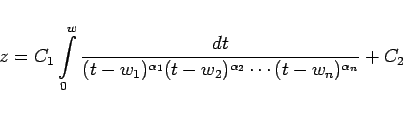 | (14.19a) |
wird das Innere eines Polygons mit den n Außenwinkeln 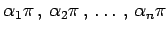 der z-Ebene auf die obere w-Halbebene abgebildet (s. Abbildung).
Mit wi sind die den Ecken des Polygons zugeordneten Punkte der reellen Achse der w-Ebene bezeichnet, mit t die Integrationsvariable. Der orientierte, also durch eine Richtung ausgezeichnete Rand des Polygons geht bei der Abbildung in die orientierte reelle Achse der w-Ebene über. Für große Werte von t verhält sich der Integrand wie 1/t2 und ist im Unendlichen regulär.
Da die Summe aller Außenwinkel eines n-Ecks gleich  ist, gilt:
ist, gilt:
| 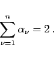 | (14.19b) |
Die komplexen Konstanten C1 und C2 bewirken eine Drehstreckung und eine Verschiebung, hängen aber nicht von der Form, sondern nur von Größe und Lage des Polygons in der z-Ebene ab.
Ist ein Polygon in der z-Ebene vorgegeben, dann können drei Punktpaare 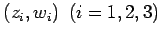 willkürlich einander zugeordnet werden. Ordnet man einem Eckpunkt des Polygons in der z-Ebene, z.B. 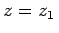, einen unendlich fernen Punkt der w-Ebene, also  zu, dann ist der Faktor 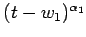 wegzulassen. Wenn das Polygon ausartet, z.B. dadurch, daß sich ein Eckpunkt im Unendlichen befindet, dann ist der zugehörige Außenwinkel gleich 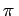, also 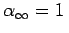, d.h., das Polygon wird zum Halbstreifen.
zu, dann ist der Faktor 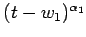 wegzulassen. Wenn das Polygon ausartet, z.B. dadurch, daß sich ein Eckpunkt im Unendlichen befindet, dann ist der zugehörige Außenwinkel gleich 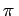, also 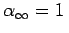, d.h., das Polygon wird zum Halbstreifen.
| Beispiel A | ||||||||||||||||||||||||||||||||||||||||||||
|
Für das in der linken Abbildung skizzierte Gebiet der z-Ebene wird die in der nachstehenden Tabelle für 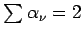 angegebene Zuordnung dreier Punkte gewählt.
Die Abbildungsformel lautet: 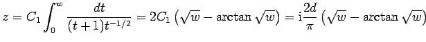. Bei der Bestimmung von C1 ist 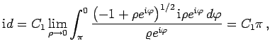 d.h., 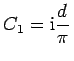. Daß die Konstante C2 =0 ist, geht aus der Zuordnung ,,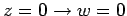`` hervor. |
| Beispiel B |
|
Abbildung eines Rechtecks. Eckpunkte des abzubildenden Rechtecks seien
Damit lautet die Abbildungsformel für ein Rechteck |